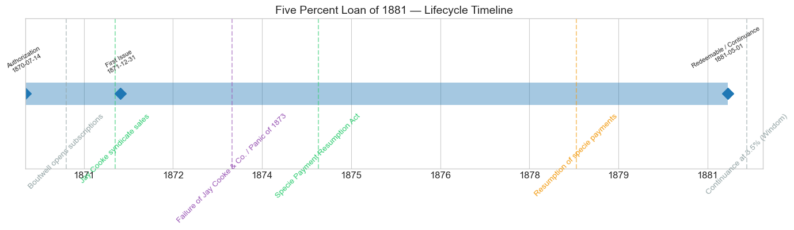
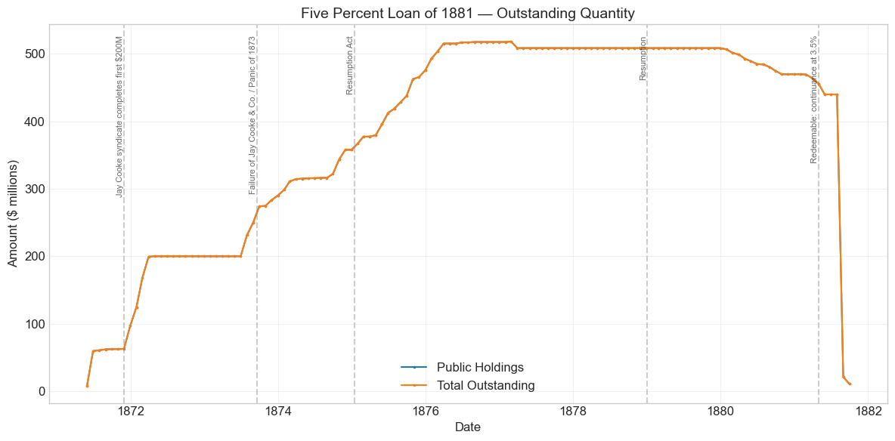
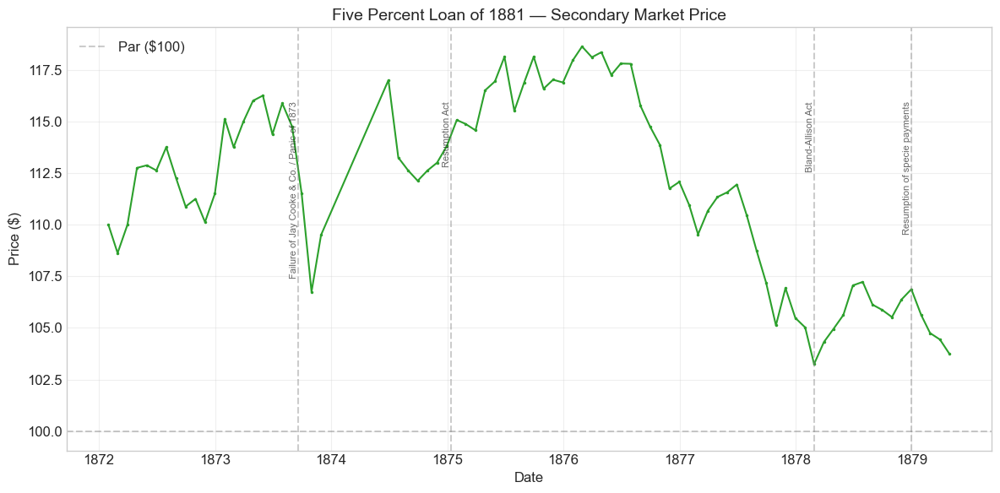
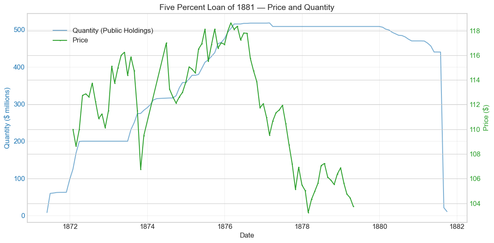
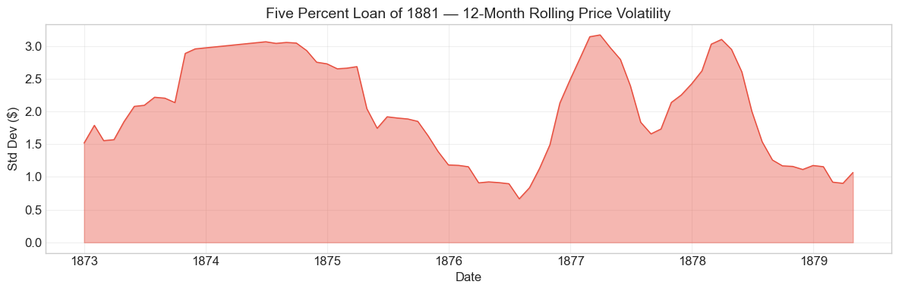

Bond Biography: Five Percent Loan of 1881#
The First Leg of the Great Refunding#
An enhanced chapter from the Hall-Payne-Sargent US Federal Bond Database (2,857 issues, 1776–1960)
Bond ID (L1): 20119 | Category: Interest Bearing > Marketable > Long Term Bond
import pandas as pd
import numpy as np
import matplotlib.pyplot as plt
import matplotlib.patches as mpatches
import datetime
import warnings
warnings.filterwarnings('ignore')
plt.style.use('seaborn-v0_8-whitegrid')
plt.rcParams.update({'figure.figsize': (12, 6), 'font.size': 12,
'axes.titlesize': 14, 'axes.labelsize': 12})
# Load the bond database
store = pd.HDFStore('../data/BondDF.h5', mode='r')
BondList = store['BondList']
BondQuant = store['BondQuant']
BondPrice = store['BondPrice']
store.close()
BondQuant_T = BondQuant.transpose()
BondPrice_T = BondPrice.transpose()
bond_id = 20119
print(f'Loaded data for: Five Percent Loan of 1881 (ID: 20119)')
/Users/thomassargent/anaconda3/lib/python3.9/site-packages/pandas/core/arrays/masked.py:60: UserWarning: Pandas requires version '1.3.6' or newer of 'bottleneck' (version '1.3.5' currently installed).
from pandas.core import (
Loaded data for: Five Percent Loan of 1881 (ID: 20119)
Overview: Opening the Great Refunding#
The Five Percent Loan of 1881 — the “funded loan of 1881,” or simply the “5s” — was the opening move in the great post-Civil War refunding. The Union had financed its war largely with 6 percent bonds, above all the five-twenties that Jay Cooke had sold to the public in the early 1860s; once those bonds became redeemable, the obvious peacetime project was to replace them with cheaper debt. The Refunding Act of July 14, 1870, as amended January 20, 1871, gave the Treasury its instrument: authority to issue three descending tiers of coin bonds — 5 percents redeemable after ten years, 4½ percents after fifteen, and 4 percents after thirty — and to exchange them at par for the outstanding 6 percent war debt. The amended act allowed $500 million of the 5 percents, and it is that first tier which this chapter follows. The companion chapters on the 4½s of 1891 (Bond 20120) and the 4s of 1907 (Bond 20121) carry the sequence to its completion.
Being first was hard. When Secretary George S. Boutwell opened the subscription books in March 1871, the greenback still floated far below gold, the silver question had not yet even been posed, and investors accustomed to 6 percent saw little reason to volunteer for 5. The loan crept forward on the strength of national-bank subscriptions until late 1871, when a banking syndicate headed by Jay Cooke & Co. — the same house that had sold the war bonds now being retired — took the balance of the first $200 million and placed much of it in Europe. A further contract in early 1873, joining Cooke with the Rothschild interests and their American agents August Belmont & Co., began working off the remaining $300 million; then, on September 18, 1873, Jay Cooke & Co. itself failed, opening the Panic of 1873 and suspending the refunding at the moment its chief salesman collapsed. It fell to Boutwell’s successors, and ultimately to John Sherman, to finish the job through renewed Rothschild–Belmont–Seligman syndicates; the $500 million was completed in 1876, and the database’s peak reading of $517,994,150 (February 1877) matches Bayley’s aggregate for the loan, the excess over the refunding authorization reflecting bonds of the same description sold under the Resumption Act of 1875.
The bond’s death was as consequential as its birth. When the redeemability date of May 1, 1881 arrived, Secretary William Windom — holding a fat surplus but facing more maturing debt than he could pay off at once — offered holders a choice: present the bonds for cash, or continue them at the pleasure of the government at only 3½ percent. Roughly $400 million of the 5s accepted continuance, an astonishing revealed-preference verdict on restored American credit; the continued bonds are tracked as separate database records. This continuance-at-maturity was the celebrated refunding operation of 1881, and it became the explicit template for Foster’s continuance of the 4½s at 2 percent in 1891. During its life on the secondary market the bond’s average price was $111.80, ranging from $103.25 to $118.62 across 82 monthly observations from January 1872 to April 1879 — quotations that, before 1879, must be read as greenback prices of a coin bond.
Historical Context: Greenbacks, Panic, and the Road Back to Gold#
The following major events framed this bond’s lifetime:
Date |
Event |
Category |
|---|---|---|
1870-07-14 |
Refunding Act (amended January 20, 1871) |
Fiscal |
1871-03 |
Boutwell opens popular subscriptions to the 5s |
Fiscal |
1871–72 |
Jay Cooke syndicate completes the first $200 million |
Fiscal |
1873-09-18 |
Failure of Jay Cooke & Co.; Panic of 1873 / Long Depression |
Crisis |
1875-01-14 |
Specie Payment Resumption Act |
Legislation |
1876 |
The $500 million of 5s completed; refunding passes to the 4½s |
Fiscal |
1878-02-28 |
Bland–Allison Act (silver purchases begin) |
Monetary |
1879-01-01 |
Resumption of specie payments |
Monetary |
1881-05-01 |
Bond redeemable; Windom’s continuance-at-3½% operation |
Fiscal |
Refunding before resumption#
The 5s were the only leg of the refunding trilogy sold entirely under the greenback standard, with resumption still a promise rather than a fact. That timing explains almost everything about their marketing troubles. In 1871 the market yield on the government’s own 6 percent bonds left little room for a 5 percent coin bond at par, and European investors — the natural buyers, since coin obligations shielded them from greenback fluctuations — had to be courted through syndicates rather than subscription books. The database’s quotations, which begin in January 1872 around $110 in currency, are less impressive than they look: with gold itself commanding a premium of roughly 10 percent over greenbacks, a coin bond quoted at 110 in paper stood near par in gold.
The Panic of 1873 and the Long Depression#
The panic that began with Jay Cooke’s failure on September 18, 1873 struck the loan twice. Directly, it removed the refunding’s principal contractor and froze new placements: the outstanding stock, which had been climbing briskly under the 1873 syndicate contract, stalled near $315 million by mid-1874. Indirectly, and more curiously, the ensuing Long Depression helped the refunding it had interrupted. Six years of falling prices and idle capital made a safe 5 percent coin bond steadily more attractive; the renewed syndicate sales of 1874–76 went off far more easily than Boutwell’s original campaign, and by 1876 the market was ready to absorb 4½s — a progression documented in the sibling chapters. The bond’s price record shows the panic itself as a sharp but contained sag — from $111.50 in September to $106.75 in October 1873 — followed by a gap in quotations and a recovery: holders of federal coin bonds were frightened, but never doubted payment.
Silver, resumption, and the approach to 1881#
The 5s promised payment “in coin of the present standard value,” and the silver agitation of 1877–78 — the Bland bill, the Matthews resolution, and the Bland–Allison Act of February 1878 — therefore touched them exactly as it touched their siblings, showing up as a modest risk premium rather than a rupture. But two other forces dominated the fives’ later price path. First, the shrinking gold premium: as the Resumption Act of January 1875 took hold and January 1, 1879 approached, the greenback climbed toward par with gold, mechanically deflating the currency quotation of a coin bond. Second, pull-to-redemption: a bond redeemable at 100 after May 1881 had to shed its premium as that date neared. Together these drove the quoted price from its $118.62 peak (February 1876) down to $103.25 (February 1878) with no implication whatever of weakening credit. After resumption the record’s quotations soon cease — market attention had shifted to the long 4s — and the final act of the fives, Windom’s continuance of 1881, is told by the quantity series alone.
# Bond Lifecycle Timeline
fig, ax = plt.subplots(figsize=(14, 4))
# Key dates
dates = [('Authorization', '1870-07-14'), ('First Issue', '1871-12-31'), ('Redeemable / Continuance', '1881-05-01')]
events = [('Boutwell opens subscriptions', '1871-03-01', 'other'),
('Jay Cooke syndicate sales', '1871-12-01', 'legislation'),
('Failure of Jay Cooke & Co. / Panic of 1873', '1873-09-18', 'crisis'),
('Specie Payment Resumption Act', '1875-01-14', 'legislation'),
('Resumption of specie payments', '1879-01-01', 'monetary'),
('Continuance at 3.5% (Windom)', '1881-08-15', 'other')]
import matplotlib.dates as mdates
from datetime import datetime
# Plot bond lifetime bar
d0 = datetime.strptime(dates[0][1], '%Y-%m-%d')
d1 = datetime.strptime(dates[-1][1], '%Y-%m-%d')
ax.barh(0, (d1 - d0).days, left=mdates.date2num(d0), height=0.3,
color='#1f77b4', alpha=0.4, label='Bond Lifetime')
# Mark key dates
for label, date_str in dates:
d = datetime.strptime(date_str, '%Y-%m-%d')
ax.plot(mdates.date2num(d), 0, 'D', color='#1f77b4', markersize=10)
ax.annotate(f'{label}\n{date_str}', (mdates.date2num(d), 0.25),
ha='center', va='bottom', fontsize=8, rotation=30)
# Mark historical events
colors = {'war': '#e74c3c', 'crisis': '#9b59b6', 'legislation': '#2ecc71', 'other': '#95a5a6', 'monetary': '#f39c12'}
for name, date_str, cat in events:
d = datetime.strptime(date_str, '%Y-%m-%d')
ax.axvline(mdates.date2num(d), color=colors.get(cat, 'gray'), alpha=0.5, linestyle='--')
ax.annotate(name, (mdates.date2num(d), -0.25), ha='center', va='top',
fontsize=10, rotation=45, color=colors.get(cat, 'gray'))
ax.set_yticks([])
ax.xaxis.set_major_formatter(mdates.DateFormatter('%Y'))
ax.set_title('Five Percent Loan of 1881 — Lifecycle Timeline')
ax.set_ylim(-1, 1)
plt.tight_layout()
plt.show()

Bond Features#
Feature |
Detail |
|---|---|
Name |
Five Percent Loan of 1881 (“Funded Loan of 1881”) |
Authorizing Act |
July 14, 1870, as amended January 20, 1871 |
First Issue Date |
December 31, 1871 (subscriptions opened March 1871; database quantities begin May 1871) |
Term |
10 years |
Redeemable |
After May 1, 1881, at the pleasure of the United States |
Coupon Rate |
5.0% |
Payment Frequency |
Quarterly |
Payable in Coin |
Yes — “coin of the present standard value” (Act of 1870) |
Authorized Amount |
$500 million under the refunding acts |
Peak Outstanding |
$517,994,150 (February 1877), including bonds sold under the Resumption Act of 1875 |
Price Sold |
Par (100), in coin |
Special Privilege |
Eligible as security for national bank note circulation |
Disposition at Maturity |
Holder’s option: redemption in cash, or continuance at 3½% (the “continued 5s,” separate database records) |
Like the later funded-loan issues, the 5s were available both as coupon bonds and as registered stock, in denominations reaching down to $50, so that the loan could be held by savers as well as by banks and foreign investors.
# Display full bond features from database
row = BondList.loc[20119]
display_cols = [
"Treasury's Name Of Issue", 'Authorizing Act', 'Term Of Loan',
'First Issue Date', 'First Redemption Date', 'Final Redemption Date',
'Coupon Rate', 'Coupons Per Year', 'Callable', 'Coin',
'Authorized Amount', 'Price Sold'
]
print('Bond Features from Database:')
print('=' * 55)
for col in display_cols:
if col in row.index:
print(f' {col:<30} {row[col]}')
Bond Features from Database:
=======================================================
Treasury's Name Of Issue Five Percent Loan of 1881
Authorizing Act July 14, 1870
Term Of Loan 10 years
First Issue Date 1871-12-31 00:00:00
First Redemption Date NaT
Final Redemption Date NaT
Coupon Rate 5.0
Coupons Per Year 4.0
Callable 0.0
Coin 1.0
Authorized Amount nan
Price Sold 1.0
Bond Quantity Over Time#
The bond’s outstanding quantity peaked at $517.99 million on February 28, 1877 — matching the aggregate that Bayley records for the funded 5s. Data span May 1871 to September 1881 (125 monthly observations), and the series traces the whole arc: Boutwell’s slow start, the syndicate surges of 1871–72 and 1873, the stall after the Panic, the completion of 1874–76, and the great continuance of August 1881.
# Bond quantity over time
fig, ax = plt.subplots(figsize=(12, 6))
for stype in ['Public Holdings', 'Total Outstanding']:
try:
s = BondQuant_T.loc[(20119, stype)]
s = s[s.notna()]
if len(s) > 0:
ax.plot(s.index, s.values / 1e6, marker='.', markersize=3, linewidth=1.5, label=stype)
except KeyError:
pass
ax.set_title('Five Percent Loan of 1881 — Outstanding Quantity')
ax.set_xlabel('Date')
ax.set_ylabel('Amount ($ millions)')
ax.legend()
ax.grid(True, alpha=0.3)
events = {'1871-12-01': 'Jay Cooke syndicate completes first $200M',
'1873-09-18': 'Failure of Jay Cooke & Co. / Panic of 1873',
'1875-01-14': 'Resumption Act',
'1879-01-01': 'Resumption',
'1881-05-01': 'Redeemable: continuance at 3.5%'}
for date_str, label in events.items():
d = pd.Timestamp(date_str)
ax.axvline(d, color='gray', alpha=0.4, linestyle='--')
ax.text(d, ax.get_ylim()[1]*0.97, label, rotation=90, va='top', ha='right', fontsize=8, alpha=0.7)
plt.tight_layout()
plt.show()

Quantity Analysis: A Decade-Long Staircase, Then a Cliff#
The slow start, 1871. The database opens in May 1871 with $8.2 million outstanding, jumping to $59.7 million in June as the first subscriptions of Boutwell’s March offering were delivered — much of the early take coming from national banks, for whom the bonds served as circulation collateral. Then the loan crawled: barely $63 million by November. A 5 percent coin bond at par was a hard sell in 1871, and the popular-subscription model that had worked for Cooke’s wartime five-twenties did not, at first, work for peace.
The Cooke syndicate completes the first $200 million, 1871–72. The steep rise from $63 million (November 1871) to $97 million (December), $125 million (January 1872), $168 million (February), and the full $200 million plateau by April 1872 records the syndicate solution: Boutwell contracted with a group of bankers headed by Jay Cooke & Co. to take the balance of the first tranche, and the syndicate placed the bonds — a large share of them in London and on the Continent — with a speed the subscription books had never approached.
The 1873 contract and the Panic. The loan sat at exactly $200 million for over a year. Then, from July 1873, a second surge began under the new joint contract between Jay Cooke & Co. and the Rothschild interests for the remaining $300 million: $231 million in July, $250 million in August, $274 million in September — the very month Cooke’s house failed and the Panic of 1873 broke. Deliveries already in train carried the total to about $315 million by the spring of 1874, and there the operation stalled: roughly $100–115 million had been placed under the 1873 contract, a third of its goal.
Completion under new management, 1874–76. From late 1874 the staircase resumes — $322 million (September 1874), $358 million (November), $412 million (June 1875), $476 million (December 1875), $515 million (March 1876) — as Secretaries Richardson and Bristow, and the reorganized syndicates built around the Rothschilds, August Belmont & Co., J. & W. Seligman & Co., Morton, Bliss & Co., and the First National Bank, worked off the remainder. The $500 million authorization was effectively exhausted by 1876, and the refunding machinery passed to the 4½s under the contract of August 1876. The final increments to the February 1877 peak of $517.99 million reflect bonds of the same description issued under the Resumption Act of 1875; the $9.6 million step down in March 1877 is best read as a bookkeeping adjustment or early retirement rather than a market event.
Plateau and continuance, 1877–81. The loan then sat near $508 million until 1880, when modest surplus-driven retirements shaved it to about $440 million by mid-1881. The cliff at the right edge of the chart is Windom’s operation: after the May 1, 1881 redeemability date, holders were invited to continue their bonds at 3½ percent or take cash. In August 1881 the original 5s collapse from $439.7 million to $21.3 million — the continued bonds, roughly $401.5 million of them, migrating to separate database records — and by September only $10.8 million awaited cash redemption. As with its siblings, every large quantity movement in this bond’s life was policy, not panic; even the Panic of 1873 shows up in the series only as a pause in issuance, never as a forced retirement.
Secondary Market Prices#
Overall Statistics (1872-01-31 to 1879-04-30): Mean $111.80, Range $103.25–$118.62, Std Dev $4.41, 82 observations.
By Period:
Period |
Mean |
Std |
Min |
Max |
Obs |
|---|---|---|---|---|---|
Issue to End (1871-12 to 1879-04) |
$111.80 |
$4.41 |
$103.25 |
$118.62 |
82 |
Two warnings are needed before reading the chart — the same warnings that govern the sibling chapters, but with greater force here, because all but the last four months of this bond’s price record predate resumption. First, the quotations are greenback prices of a coin bond: with gold at a premium of roughly 10–15 percent over paper through the mid-1870s, a bond worth about par in gold was quoted at $110–118 in currency. The apparent premium is mostly the gold premium; the gold price of the 5s hovered much closer to par throughout. Second, the decline from the February 1876 peak of $118.62 to $103.25 in February 1878 — the bond’s entire “maximum drawdown” — is dominated by two benign forces: the appreciation of the greenback toward gold parity as resumption approached, and the mechanical pull toward $100 exerted by the May 1881 redeemability date. The silver agitation of 1877–78 added a modest, temporary risk discount (the low falls precisely in the month of the Bland–Allison Act), but there was never a moment when the market doubted payment. The record’s quotations end in April 1879, shortly after resumption; the bond’s last two years, when it traded as a short coin security awaiting Windom’s decision, are tracked in the database by quantities only.
# Annotated price chart
fig, ax = plt.subplots(figsize=(12, 6))
s = BondPrice_T.loc[(20119, 'Average')]
s = pd.to_numeric(s, errors='coerce').dropna()
if len(s) > 0:
ax.plot(s.index, s.values, marker='.', markersize=3, linewidth=1.5, color='#2ca02c')
ax.axhline(100, color='black', alpha=0.2, linestyle='--', label='Par ($100)')
ax.set_title('Five Percent Loan of 1881 — Secondary Market Price')
ax.set_xlabel('Date')
ax.set_ylabel('Price ($)')
ax.legend()
ax.grid(True, alpha=0.3)
events = {'1873-09-18': 'Failure of Jay Cooke & Co. / Panic of 1873',
'1875-01-14': 'Resumption Act',
'1878-02-28': 'Bland-Allison Act',
'1879-01-01': 'Resumption of specie payments'}
for date_str, label in events.items():
d = pd.Timestamp(date_str)
ax.axvline(d, color='gray', alpha=0.4, linestyle='--')
ax.text(d, ax.get_ylim()[1]*0.97, label, rotation=90, va='top', ha='right', fontsize=8, alpha=0.7)
plt.tight_layout()
plt.show()

# Price and Quantity — dual-axis chart
fig, ax1 = plt.subplots(figsize=(12, 6))
# Quantity (left axis)
for stype in ['Public Holdings', 'Total Outstanding']:
try:
q = BondQuant_T.loc[(20119, stype)]
q = q[q.notna()]
if len(q) > 0:
ax1.plot(q.index, q.values / 1e6, color='#1f77b4', alpha=0.6, label=f'Quantity ({stype})')
break
except KeyError:
pass
ax1.set_xlabel('Date')
ax1.set_ylabel('Quantity ($ millions)', color='#1f77b4')
ax1.tick_params(axis='y', labelcolor='#1f77b4')
# Price (right axis)
ax2 = ax1.twinx()
p = BondPrice_T.loc[(20119, 'Average')]
p = pd.to_numeric(p, errors='coerce').dropna()
if len(p) > 0:
ax2.plot(p.index, p.values, color='#2ca02c', marker='.', markersize=2, label='Price')
ax2.set_ylabel('Price ($)', color='#2ca02c')
ax2.tick_params(axis='y', labelcolor='#2ca02c')
ax1.set_title('Five Percent Loan of 1881 — Price and Quantity')
ax1.grid(True, alpha=0.3)
fig.legend(loc='upper left', bbox_to_anchor=(0.1, 0.9))
plt.tight_layout()
plt.show()

Detected Price/Quantity Events, Explained#
The following significant movements were auto-detected in the data. The right-hand column gives the historical cause:
Date |
Type |
Change |
Explanation |
|---|---|---|---|
1871-06 |
Quantity increase |
+626.1% |
Delivery of the first subscriptions under Boutwell’s March 1871 offering, on a small initial base ($8.2 to $59.7 million). Early takers were largely national banks seeking circulation collateral. |
1871-12 |
Quantity increase |
+54.5% |
The syndicate solution: with the popular subscription stalled near $63 million, the banking group headed by Jay Cooke & Co. begins taking down the balance of the first $200 million ($62.8 to $97.0 million). |
1872-01 |
Quantity increase |
+28.7% |
Syndicate placements continue ($97 to $125 million), with heavy sales to European investors through London. |
1872-02 |
Quantity increase |
+34.4% |
The syndicate operation at full speed ($125 to $168 million); the $200 million plateau is reached by April 1872. |
1874-06 |
Price spike |
+6.8% |
An artifact of thin quotation rather than news: this is the first observation after a six-month gap in the record (December 1873 – May 1874), and it registers, in one step, the market’s recovery from the post-panic lows of October 1873 together with the ordinary movement of the gold premium over the missing months. |
1881-08 |
Quantity decrease |
−95.2% |
Windom’s continuance operation. After the May 1, 1881 redeemability date, holders of roughly $401.5 million of the 5s accepted continuance at 3½ percent; the continued bonds pass to separate database records, and the original record falls from $439.7 to $21.3 million. |
1881-09 |
Quantity decrease |
−49.2% |
The residue is presented for cash redemption ($21.3 to $10.8 million); the record winds down to a rump of unpresented bonds. |
The pattern matches the bond’s siblings exactly: the violent quantity movements are all deliberate acts of debt management — syndicate issuance in 1871–72 and continuance in 1881 — while the one detected price event dissolves, on inspection, into a gap in the quotations. The Panic of 1873, the greatest financial storm of the era, appears in this bond’s data only as a pause in the issuance staircase and a four-and-three-quarter-point dip in the October 1873 quotation.
Price Volatility#
Maximum drawdown: −13.0% (from the peak of $118.62 on February 29, 1876 to $103.25 on February 28, 1878)
Average monthly return: −0.061%
As with the 4½s of 1891 and the 4s of 1907, these numbers must not be read as investor losses — and for the 5s the point is even sharper, because the “drawdown” here is mostly not even amortization of a real premium. A large part of the quoted price above par was the gold premium on a coin bond quoted in greenbacks, and the 1876–78 decline chiefly registers the greenback’s appreciation as resumption approached: the holder’s claim, measured in gold, was barely changing. The remainder is the familiar pull-to-redemption of a bond that would be redeemable at 100 in May 1881. The steady, slightly negative average monthly return is precisely these two glide paths superimposed.
The rolling-volatility chart shows the fives to have been, by the standards of the 1870s, a placid security. Variability is highest around the Panic of 1873 and its patchy aftermath of quotations, and again in 1876–78 when the shrinking gold premium, the silver debates, and the approaching redeemability date were all in motion at once. The truly turbulent monetary politics of the 1880s and 1890s belong to this bond’s siblings and successors; the original 5s left the stage first, before resumption had even been tested.
# Rolling volatility (12-month window)
p = BondPrice_T.loc[(20119, 'Average')]
p = pd.to_numeric(p, errors='coerce').dropna()
if len(p) >= 12:
rolling_std = p.rolling(window=12).std().dropna()
fig, ax = plt.subplots(figsize=(12, 4))
ax.fill_between(rolling_std.index, rolling_std.values, alpha=0.4, color='#e74c3c')
ax.plot(rolling_std.index, rolling_std.values, color='#e74c3c', linewidth=1)
ax.set_title('Five Percent Loan of 1881 — 12-Month Rolling Price Volatility')
ax.set_xlabel('Date')
ax.set_ylabel('Std Dev ($)')
ax.grid(True, alpha=0.3)
plt.tight_layout()
plt.show()
else:
print('Insufficient data for rolling volatility (need >= 12 observations)')

Issuance, Distribution, and Redemption#
Boutwell’s subscription and the first syndicate. Secretary Boutwell opened the loan to subscription in March 1871, at par in coin, in both registered and coupon form. The response was thin — a 5 percent coin bond offered no obvious bargain while 6 percent government paper was still abundant — and by autumn only some $60-odd million had been taken, much of it by national banks. The solution, negotiated in 1871, was to place the balance of the first $200 million through a banking syndicate headed by Jay Cooke & Co., with substantial participation by London houses. The syndicate machinery — subscription agents on both sides of the Atlantic, exchanges of new 5s for called six percent five-twenties, coin remitted to the Treasury — completed the $200 million by the spring of 1872, and established the model that every later leg of the refunding would use.
The 1873 contract and Cooke’s fall. In early 1873 the Treasury contracted for the remaining $300 million with an enlarged syndicate that joined Jay Cooke & Co. with the London Rothschilds and their American agents August Belmont & Co. Sales under this contract ran through the summer of 1873 — the database shows the loan climbing from $200 million to $274 million between June and September — and then the operation was decapitated: on September 18, 1873, Jay Cooke & Co. suspended, brought down by its overextension in Northern Pacific railway finance, and its failure opened the Panic of 1873. The government’s refunding agent had become the trigger of the era’s great crash. Deliveries in train carried the loan to about $315 million, where it stalled for months.
Completion, 1874–76. The refunding resumed under Secretaries Richardson and Bristow through syndicate contracts in which the Rothschild–Belmont connection was now the anchor, joined by J. & W. Seligman & Co., Morton, Bliss & Co., and the First National Bank of New York — the same combination that would later market the 4½s and 4s. Aided by falling market yields as the depression deepened, these syndicates worked off the remainder steadily through 1875 and completed the $500 million in 1876, at which point the refunding shifted to the 4½ percents. A further $18 million of bonds of the same description, sold under the authority of the Resumption Act of 1875, brought the aggregate to the $517.99 million peak recorded in the database.
Who held it. The loan’s ownership was split among European investors reached through the syndicates, domestic investors, and — a constituency that grew throughout the bond’s life — the national banks, which deposited the bonds with the Treasurer as security for their circulating notes. The circulation privilege mattered decisively at the end: a bank whose notes were secured by 5s faced, in 1881, the choice between surrendering its collateral and accepting a lower coupon to keep it.
Windom’s continuance of 1881. The bonds became redeemable at the government’s pleasure after May 1, 1881. Secretary Windom, confronting hundreds of millions of maturing 6s and 5s in a single year, hit upon a device that required no new legislation: instead of floating a new loan, he offered holders the option of having their bonds continued at 3½ percent, redeemable at the government’s pleasure, with cash redemption available to any holder who preferred it. The operation had been rehearsed that spring on the maturing 6s of 1861 and 1863 (roughly $178 million continued); applied to the 5s in the summer of 1881, it was accepted by the holders of roughly $401.5 million — over nine-tenths of the outstanding loan — while the small residue took cash. The database records the exodus in August–September 1881, and tracks the continued 3½ percent bonds as separate records; they were themselves redeemed within a few years as the surplus permitted. The annual interest saving from the 1881 continuances ran to roughly $10 million, and every coupon and every dollar of principal on the original 5s was paid, or continued, precisely on the terms written in 1870.
Implications and Legacy#
The proof that refunding was possible. The 5s of 1881 were the experiment on which the whole great refunding rested. In 1871 no one knew whether the holders of 6 percent war bonds — many of them Europeans who had bought at deep discounts during the war — could be induced to accept 5 percent from a government still on an inconvertible paper currency. The answer arrived slowly, through failed subscription books, syndicate improvisation, and a panic that destroyed the loan’s own chief contractor; but it arrived. By 1876 the United States had placed half a billion dollars of 5 percent coin bonds at par, and each subsequent leg of the refunding — the 4½s, then the 4s — started from the credibility the fives had purchased. The sequence of coupons the market accepted, 6–5–4½–4 within a single decade, remains one of the fastest peacetime declines in a great power’s borrowing cost on record.
Jay Cooke, twice over. There is a grim symmetry in the fives’ placement history. Jay Cooke made his name selling the 6 percent five-twenties that financed the Union; he was then hired to sell the 5 percents that retired them; and his failure in September 1873, while under contract for that very purpose, opened the panic that named the decade. The episode is a standing illustration of a theme that runs through the database: the government’s credit and its bankers’ credit are distinct things. Cooke’s collapse froze the placement of the loan but left its price barely dented — federal bonds sagged five points and recovered, while the railroads and banks around them were ruined.
The continuance of 1881 as the trilogy’s model. Windom’s operation at the fives’ maturity was the most consequential thing about them. Faced with an unprecedented wall of maturing debt, the Treasury neither defaulted, nor compelled conversion, nor paid the costs of a new flotation; it simply offered each holder a lower coupon or his money, and let him choose. That nine-tenths of the holders of a 5 percent bond voluntarily accepted 3½ percent — in 1881, sixteen years after Appomattox — was the market’s own certification of restored American credit, and it saved the government millions annually at the stroke of a circular. The device became a fixture: Foster’s continuance of the 4½s at 2 percent in 1891 (told in the chapter on Bond 20120) copied it explicitly, and the logic of voluntary exchange at the holder’s option echoes in Treasury refundings ever since. The first leg of the refunding thus ended by inventing the instrument with which the later legs, and much subsequent American debt management, would end as well.
A bond of the paper era. Finally, the fives are the database’s cleanest specimen of a coin bond lived out almost entirely under the greenback standard. Their price record is a running translation between two monetary worlds — coin promises quoted in paper — and it rewards careful reading precisely because the dramatic-looking movements (the $118 “premium,” the 13 percent “drawdown”) largely dissolve once the gold premium is stripped out. For students of the Payne–Szőke–Hall–Sargent database, the fives are a standing caution: before 1879, the quotation is not the bond.
References#
Primary Sources#
An Act to authorize the refunding of the national debt, July 14, 1870, and amendatory act of January 20, 1871.
Act of January 14, 1875 (Resumption Act).
Annual Reports of the Secretary of the Treasury, 1870–1882, especially the reports of George S. Boutwell (1871–1872) on the first refunding sales, John Sherman (1877–1880) on the completion of the refunding and resumption, and William Windom (1881) on the continuance of the maturing 6s and 5s at 3½ percent.
Sherman, J. (1895). Recollections of Forty Years in the House, Senate and Cabinet. Chicago: Werner Co.
Scholarly Works#
Bayley, R. A. (1881). The National Loans of the United States, From July 4, 1776 to June 30, 1880. Washington: Government Printing Office.
Friedman, M. & Schwartz, A. J. (1963). A Monetary History of the United States, 1867–1960. Princeton: Princeton University Press. (Ch. 2 on the greenback period and resumption.)
Noyes, A. D. (1909). Forty Years of American Finance. New York: G. P. Putnam’s Sons.
Unger, I. (1964). The Greenback Era: A Social and Political History of American Finance, 1865–1879. Princeton: Princeton University Press.
Oberholtzer, E. P. (1907). Jay Cooke: Financier of the Civil War. Philadelphia: George W. Jacobs & Co.
Homer, S. & Sylla, R. (2005). A History of Interest Rates, 4th ed. Hoboken: Wiley.
Payne, J., Szoke, B., Hall, G. & Sargent, T. (2025). “Costs of Financing US Federal Debt Under a Gold Standard: 1791–1933.” Quarterly Journal of Economics.
General Histories#
Dewey, D. R. (1918). Financial History of the United States. New York: Longmans, Green and Co.
Studenski, P. & Krooss, H. E. (1952). Financial History of the United States. New York: McGraw-Hill.
Enhanced Bond Biography generated from the Hall-Payne-Sargent Bond Database. Narrative enrichment draws principally on Bayley (1881), Noyes (1909), Sherman (1895), Friedman & Schwartz (1963), Unger (1964), and the Annual Reports of the Secretary of the Treasury. See the companion chapters on the Four and One-Half Percent Loan of 1891 (Bond 20120) and the Four Percent Loan of 1907 (Bond 20121) for the later legs of the refunding sequence.